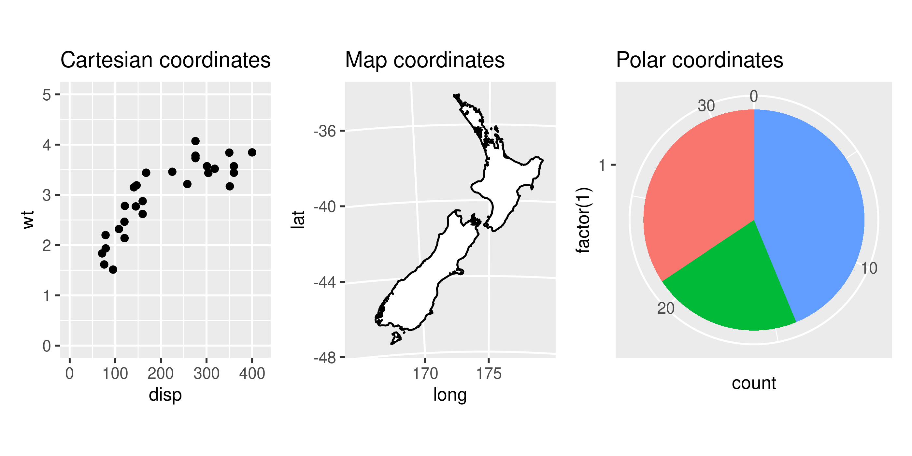
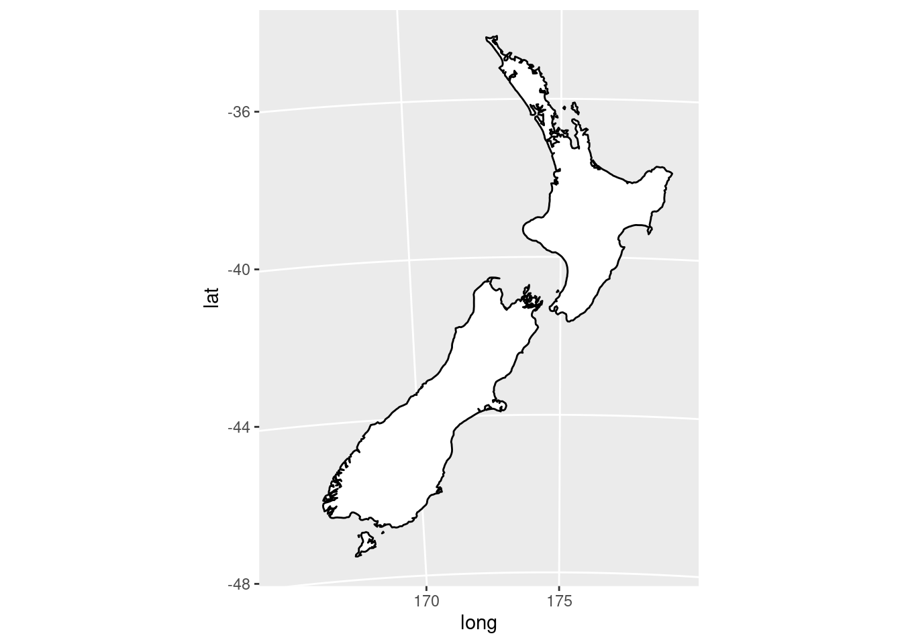
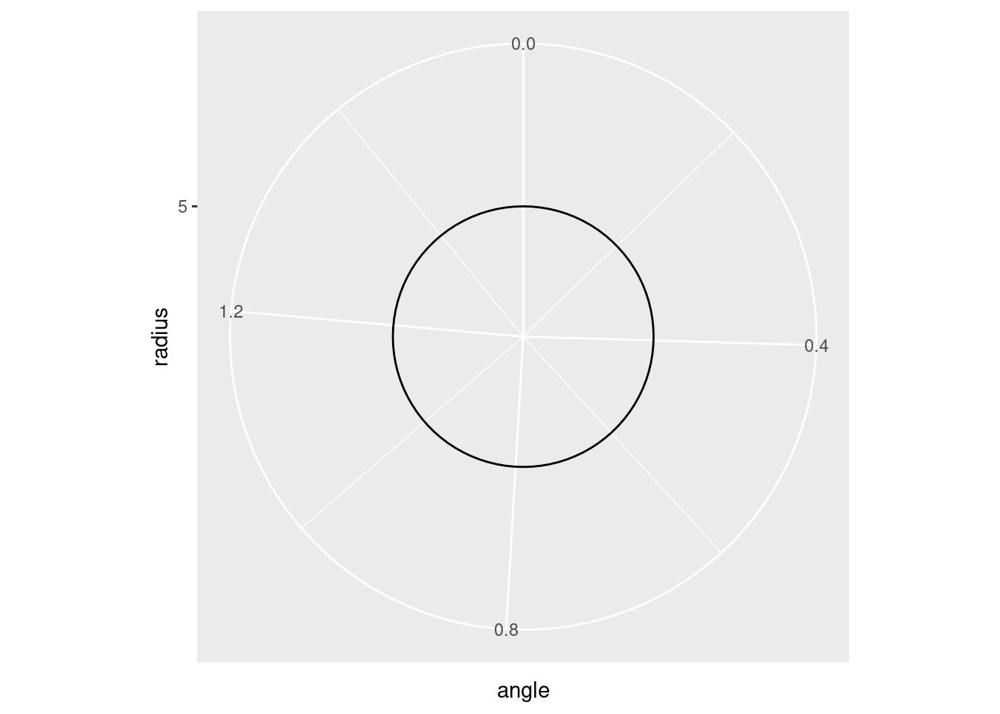

1 Coordinates, Angles and Objects
I begin this book by introducing some basic math, and also some technical terms (a.k.a. “jargon”) from computer graphics that will help you follow along. The idea of this chapter is to be a really simple and quick introduction to the most essential math concepts that we use while drawing things in a image.
First, I talk about coordinate systems, and the Cartesian plane, as the main coordinate system used here in this book. Second, I explain and establish some jargon’s used across this book, such as vertex, objects and vertices. Third, I end this chapter talking about angles, circles and everything you need to know about trigonometry (which is not much).
1.1 Coordinate systems
The coordinate system is the system that determines how an object will be positioned in the image given a x and y positions. In other words, this system determines how the x and y positions are combined to position your object in the image.
In ggplot2 there are essentially 3 different coordinate systems, which are:
By changing the coordinate system of your image, you change the way the objects are drawn and positioned in your image space (Wickham 2016). In other words, a straight line will look straight in a Cartesian plane, but it will not look straight in a non-linear coordinate system, such as the Polar coordinate system, which is a circular coordinate system.
The coordinates of a Polar coordinate system form a circumference around a center point, and as a consequence, if you draw any object in this coordinate system, this object will likely assume a round or circular shape, even if you did not have the intention of drawing something with this shape.
1.1.1 The Cartesian plane
By default, ggplot2 always use the Cartesian coordinate system, which is created from the coord_cartesian() function. This is definitely the most familiar, and common type of coordinate system that we see all the time in real life.
We see it in math class, when we learn about vectors and linear algebra, and also in most kinds of data visualizations (like scatterplots or bar charts), and some types of maps too.
The Cartesian coordinate system is based on a two-dimensional coordinate plane, that is formed by the intersection of two perpendicular lines. The horizontal line is known as the “x axis”, and the vertical line is known as the “y axis”.
library(ggplot2)
df <- data.frame(
x = c(5, 12, 10, 18),
y = c(29, 50, 32, 32)
)
ggplot(df) +
geom_point(aes(x, y)) +
coord_cartesian(
xlim = c(0, 20), y = c(0, 60)
) +
labs(x = "x axis", y = "y axis")
A coordinate, or a point, or a position in the cartesian plane is identified by a pair of values. The first value is the position in the “x axis”, and the second value is the position in the “y axis”. As an example, the coordinate \((2, 8)\) represents the point located at \(x = 2\) and \(y = 8\) in the plane. You could also interpret this coordinate as: it is the point located at two steps to the right, plus eight steps up.
1.1.2 Other coordinate systems
I will not talk at length about the other coordinate systems, because this book focus on the Cartesian plane. When I talk about coordinates here, most of the time I’m referring to a coordinate in a Cartesian plane.
Now, you can use any of the other two coordinate systems by adding one of these functions to your plot composition.
coord_map()coord_quickmap()coord_polar()
You can draw maps (or geographic data in general) into a Cartesian plane if you want to. However, when we do that, a small distortion happens to the points/coordinates that compose the map, and this obviously affect the visual shape of the map.
This distortion happens essentially because geographic data is not based on a flat surface. Geographic data is based on two values, which are the latitude and longitude. These two values, or these two measures, represents a specific location in a spherical surface, which is the planet Earth.
A Cartesian plane is flat surface (or a flat plane), like the surface of a dinner table. While the planet Earth, is much more similar to sphere, or a spherical surface, and this fact affects a lot on the way we see the objects that are drawn in this surface.
That means that, if we want to drawn a map precisely in a 2D image, we need to project this map into a 2D plane, by using the coord_map() or coord_quickmap() functions that adjust the coordinates to create a projection of your map over the image. In other words, when you create a map projection, your image looks like as if you taken a photo of the planet Earth from a satellite.
So, in summary, you should never use coord_cartesian() to print maps in ggplot2. Instead, add coord_map() or coord_quickmap() to your image composition.
nzmap <- maps::map("nz", plot = FALSE)
nzmap |>
ggplot(aes(x = long, y = lat, group = group)) +
geom_polygon(fill = "white", colour = "black") +
coord_map(
"azequalarea",
orientation = c(-36.92, 174.6, 0)
)
On the other hand, the Polar coordinate system is a system based on two coordinates: angle and radius. These two measures are the back-bone of circles. That is why it is a circular coordinate system, and also why most of the things that you drawn in this system end up looking like circles.
df <- data.frame(
angle = c(0, pi/2),
radius = c(5, 5)
)
ggplot(df) +
geom_line(aes(angle, radius)) +
coord_polar()
Wickham, Hadley. 2016. Ggplot2: Elegant Graphics for Data Analysis. 2nd ed. Springer-Verlag New York. https://ggplot2-book.org/.